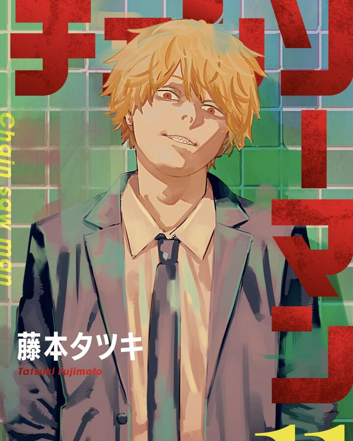

Initial Story

The story is set in a world where Devils are born from human fears. However, individuals called Devil Hunters specialize in hunting and employing them. The events take place in 1997, in an alternate timeline where the Soviet Union still exists, and many events such as the Holocaust, AIDS and nuclear weapons have been erased from history due to the consumption of their respective Devils by the Chainsaw Devil, with only four powerful Devils known as the Horsemen (Control, War, Famine, and Death) remembering the events. Humans can make contracts with Devils via a sacrifice, allowing them to use the Devil's power. Devils can also become Fiends by possessing a human's dead body. When a Devil is killed on Earth, it reappears in Hell, and if it is killed in Hell, it reincarnates in a new body on Earth.